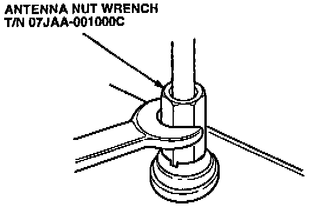
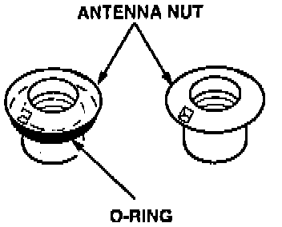
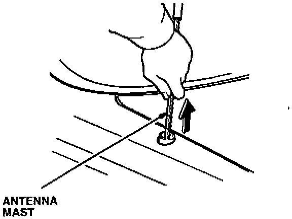
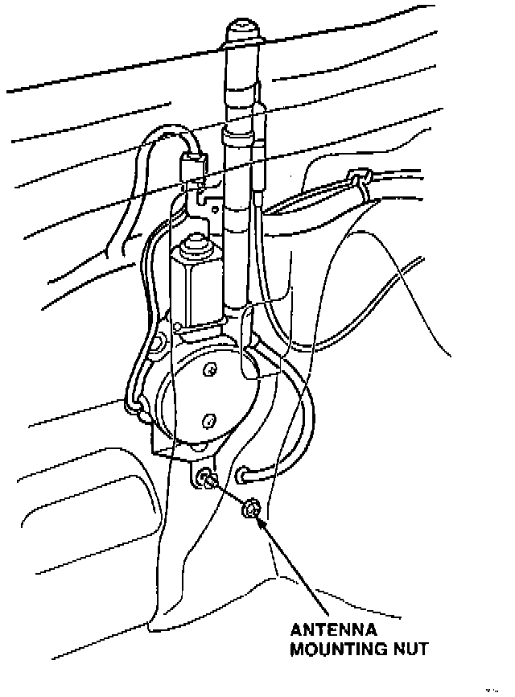
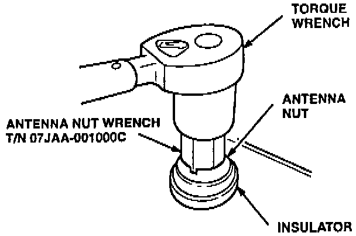

Corrective Action
Replace the parts, listed under PARTS INFORMATION, as directed by the results of the diagnostic procedure.Antenna Mast Replacement

1. Remove the antenna nut with the special tool.

2. Inspect the outer diameter of the antenna nut.
^ If the antenna nut does not have an 0-ring around the outer diameter, go to Antenna Mast kit Replacement.
^ If the nut has an 0-ring around the outer diameter, continue with step 3.
3. Turn the ignition switch ON; then turn the radio on to extend the antenna mast.

4. Pull the antenna mast out of the antenna tube.

5. Insert the new antenna mast assembly into the antenna tube; then turn the radio off to retract the antenna mast.
6. Loosen the antenna motor mounting nut(s).

7. Reinstall the antenna nut, and tighten it to 2.3 Nm (0.23 kg-m, 20 lb-in).
8. Tighten the antenna motor mounting nut(s).